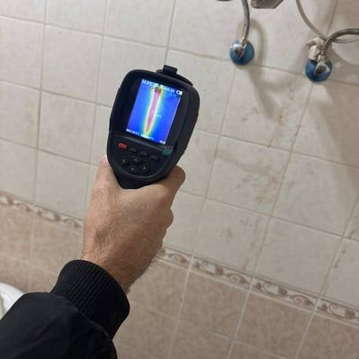
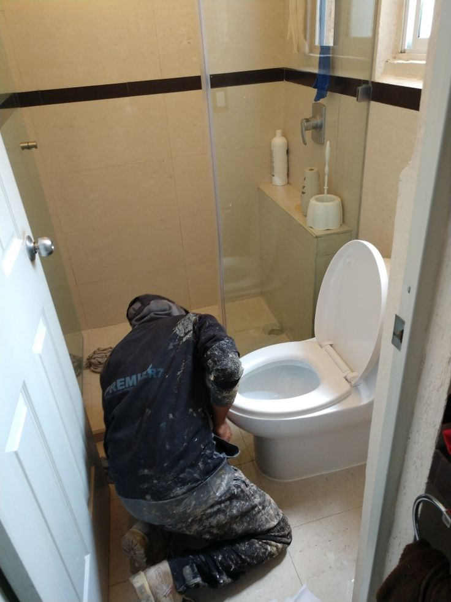
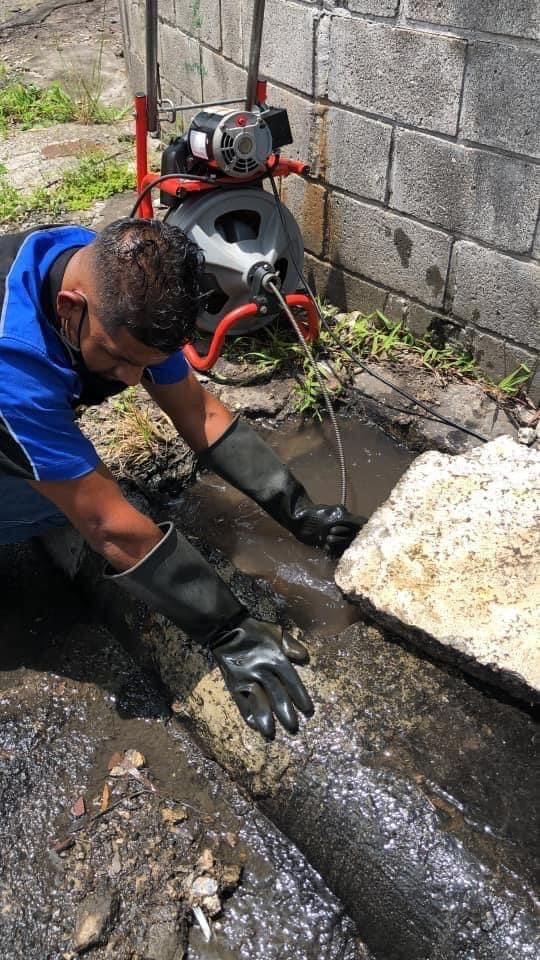
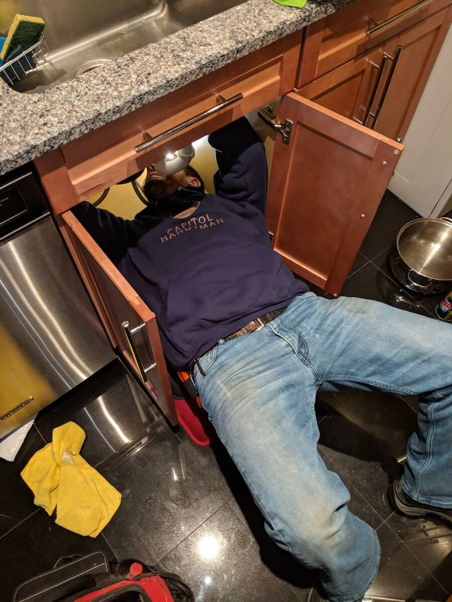

مقدمة
تعد مشكلة تسربات المياه من أكثر المشكلات التي تواجه أصحاب المنازل والفلل والشقق في مدينة الرياض، فهي لا تؤثر فقط على ارتفاع فواتير المياه، بل قد تتسبب أيضًا في تلف الجدران والأسقف والأرضيات وضعف البنية الإنشائية للمبنى إذا لم يتم اكتشافها ومعالجتها في الوقت المناسب. ولهذا أصبح البحث عن شركة كشف تسربات المياه بالرياض خطوة ضرورية لكل من يلاحظ أي علامة تدل على وجود تسرب داخل منزله أو منشأته.
يعتمد نجاح عملية الكشف على خبرة الفنيين وجودة الأجهزة المستخدمة، لذلك يحرص الكثير من العملاء على اختيار شركة كشف تسريب المياه بالرياض تمتلك أجهزة إلكترونية حديثة قادرة على تحديد مكان التسرب بدقة دون الحاجة إلى التكسير العشوائي. وتقدم شركة اعمار المنزل للخدمات المنزلية حلولًا متطورة للكشف عن جميع أنواع التسربات باستخدام أحدث التقنيات التي توفر الوقت وتحافظ على سلامة المبنى.
وعند التعامل مع شركة اعمار المنزل لكشف تسريب المياه ستحصل على خدمة متكاملة تبدأ بالفحص الدقيق وتنتهي بإصلاح المشكلة والتأكد من عدم تكرارها مستقبلًا، بينما تعتمد شركة اعمار لكشف تسريبات المنزل على فريق متخصص يمتلك خبرة واسعة في التعامل مع جميع أنواع التسربات داخل المنازل والفلل والمنشآت التجارية.
كما تقدم شركة اعمار المنزل لكشف تسربات المياه بالرياض خدمات احترافية تناسب جميع أنواع المباني، مع الالتزام بأعلى معايير الجودة والدقة، مما يجعلها خيارًا مناسبًا لكل من يبحث عن شركة كشف تسربات تمتلك الخبرة والاحترافية.
ما هي تسربات المياه؟
تسرب المياه هو خروج المياه من المواسير أو الوصلات أو الخزانات أو شبكات التغذية إلى أماكن غير مخصصة لها، وقد يكون ظاهرًا ويمكن ملاحظته بسهولة، أو مخفيًا داخل الجدران أو الأرضيات ويحتاج إلى أجهزة متخصصة للكشف عنه.
ولهذا السبب يعتمد الكثير من العملاء على كشف تسربات المياه بالرياض بواسطة فنيين محترفين يستطيعون تحديد مصدر المشكلة بسرعة ودقة، خاصة عند الاستعانة بـ شركة كشف تسربات المياه بالرياض تمتلك أجهزة حديثة وتقنيات متطورة.
وتؤكد شركة اعمار المنزل للخدمات المنزلية أن اكتشاف المشكلة في بدايتها يوفر على العميل الكثير من تكاليف الإصلاح المستقبلية، كما تساعد خدمات كشف تسربات المياه على حماية المبنى من الأضرار التي قد تتفاقم مع مرور الوقت.
لماذا تعتبر مشكلة تسربات المياه خطيرة؟
يعتقد بعض الأشخاص أن تسرب المياه مجرد مشكلة بسيطة، لكن الحقيقة أنها قد تؤدي إلى خسائر كبيرة إذا لم يتم التعامل معها بسرعة.
ومن أبرز الأضرار:
- ارتفاع فاتورة المياه بصورة ملحوظة.
- تشققات في الجدران والأسقف.
- ضعف الخرسانة مع مرور الوقت.
- انتشار الرطوبة والعفن.
- ظهور روائح غير مرغوبة.
- تلف الدهانات والديكورات.
- تضرر الأرضيات الخشبية والسيراميك.
- التأثير على الأثاث والمفروشات.
ولهذا تنصح شركة كشف تسريب المياه بالرياض بعدم تأجيل الفحص عند ملاحظة أي علامة غير طبيعية، كما توصي شركة اعمار المنزل لكشف تسريب المياه بإجراء فحص دوري خاصة في المباني القديمة.
كيف تعرف أن لديك تسرب مياه؟
هناك مجموعة من العلامات التي تدل على وجود تسرب داخل المنزل، ومن أهمها:
1- ارتفاع فاتورة المياه
إذا لاحظت زيادة غير مبررة في قيمة الفاتورة فقد يكون السبب وجود تسرب مخفي.
لذلك تنصح شركة كشف تسربات بإجراء فحص شامل باستخدام الأجهزة الإلكترونية.
2- ظهور بقع رطوبة
تعتبر بقع الرطوبة من أشهر علامات التسرب، خاصة إذا ظهرت على الجدران أو الأسقف.
وتوضح شركة اعمار المنزل للخدمات المنزلية أن استمرار الرطوبة قد يؤدي إلى نمو العفن وتلف الدهانات.
3- تشقق الجدران
قد تسبب المياه المتسربة ضعفًا في طبقات التشطيب مما يؤدي إلى ظهور الشروخ.
ولهذا تنصح شركة كشف تسربات المياه بالرياض بسرعة التواصل مع المختصين قبل تفاقم المشكلة.
4- روائح العفن
وجود رائحة رطوبة أو عفن بشكل دائم قد يكون دليلًا على وجود مياه محبوسة داخل الجدران.
وتستخدم شركة اعمار المنزل لكشف تسربات المياه بالرياض أجهزة متطورة تساعد في تحديد مصدر المشكلة دون تكسير.
5- ضعف ضغط المياه
من العلامات التي تستدعي إجراء كشف تسربات المياه بالرياض انخفاض ضغط المياه في بعض أجزاء المنزل دون سبب واضح.
أسباب تسربات المياه
توجد أسباب عديدة تؤدي إلى حدوث التسربات، ومن أبرزها:
تلف مواسير المياه
مع مرور الوقت قد تتعرض المواسير للتآكل أو الصدأ.
سوء التركيب
التركيب غير الاحترافي من أهم أسباب التسربات.
استخدام مواد منخفضة الجودة
اختيار خامات رديئة يؤدي إلى ظهور المشكلات خلال فترة قصيرة.
ارتفاع ضغط المياه
الضغط الزائد قد يسبب تلف الوصلات والمواسير.
عدم الصيانة الدورية
إهمال الصيانة يزيد من احتمالية حدوث الأعطال.
ولهذا تؤكد شركة اعمار لكشف تسريبات المنزل أن الصيانة الوقائية تقلل بشكل كبير من احتمالية حدوث التسربات.
أنواع تسربات المياه
تنقسم التسربات إلى عدة أنواع، ويختلف أسلوب التعامل مع كل نوع.
التسربات الظاهرة
مثل:
- تسرب الحنفيات.
- تسرب الخلاطات.
- تسرب الخزانات.
- تسرب السخانات.
ويكون اكتشافها سهلًا نسبيًا.
التسربات المخفية
وهي الأخطر لأنها تحدث داخل:
- الجدران.
- الأرضيات.
- الأسقف.
- شبكات التغذية.
وتحتاج إلى شركة كشف تسريب المياه بالرياض تستخدم أجهزة إلكترونية حديثة لتحديد مكان التسرب بدقة.
وتوفر شركة اعمار المنزل لكشف تسريب المياه حلولًا متطورة للكشف عن هذه التسربات دون الحاجة إلى التكسير العشوائي.
لماذا يجب اختيار شركة متخصصة؟
الاعتماد على فني غير متخصص قد يؤدي إلى:
- تكسير أجزاء سليمة.
- زيادة تكاليف الإصلاح.
- عدم معالجة السبب الحقيقي.
- تكرار المشكلة مرة أخرى.
أما عند الاستعانة بـ شركة كشف تسربات المياه بالرياض فإن عملية الفحص تتم بطريقة احترافية باستخدام أجهزة دقيقة تحدد مكان التسرب خلال وقت قصير.
كما تعتمد شركة اعمار المنزل للخدمات المنزلية على فريق مدرب يمتلك خبرة في التعامل مع جميع أنواع المباني، بينما تقدم شركة اعمار المنزل لكشف تسربات المياه بالرياض تقارير فنية دقيقة تساعد العميل على فهم المشكلة وطريقة علاجها.
أحدث أجهزة كشف التسربات
تعتمد شركة كشف تسريب المياه بالرياض على أجهزة إلكترونية متطورة قادرة على تحديد مكان التسرب دون إحداث أي أضرار بالمبنى.
ومن أشهر الأجهزة المستخدمة:
- أجهزة الاستماع الصوتي.
- أجهزة الموجات الصوتية.
- أجهزة قياس الضغط.
- الكاميرات الحرارية.
- أجهزة الكشف الرقمية.
وتستخدم شركة اعمار لكشف تسريبات المنزل هذه التقنيات لتقليل وقت الفحص وزيادة دقة النتائج، بينما تحرص شركة اعمار المنزل للخدمات المنزلية على تحديث معداتها باستمرار لتقديم أفضل خدمة ممكنة.
الكشف عن تسربات المياه بدون تكسير
أصبح كشف تسربات المياه بالرياض بدون تكسير من أكثر الخدمات التي يبحث عنها أصحاب المنازل والفلل، وذلك لأنه يحافظ على الجدران والأرضيات ويقلل من تكاليف الإصلاح. في الماضي كان تحديد مكان التسرب يعتمد على التخمين والتكسير في أكثر من موقع، أما اليوم فقد تغير الأمر تمامًا بفضل الأجهزة الإلكترونية الحديثة التي تستخدمها شركة كشف تسربات المياه بالرياض للوصول إلى مصدر المشكلة بدقة عالية.
وتعتمد شركة اعمار المنزل للخدمات المنزلية على أحدث تقنيات الفحص التي تمكن الفني من تحديد مكان التسرب دون الحاجة إلى إزالة السيراميك أو تكسير الجدران، وهو ما يوفر على العميل الوقت والمال ويقلل من مدة تنفيذ العمل.
كما تستخدم شركة اعمار المنزل لكشف تسريب المياه أجهزة حساسة تستطيع التقاط أصوات تسرب المياه داخل المواسير، إضافة إلى أجهزة قياس الضغط والكاميرات الحرارية التي تكشف أماكن الرطوبة المخفية.
ولهذا أصبحت شركة اعمار لكشف تسريبات المنزل من الخيارات المفضلة للعملاء الذين يرغبون في حل المشكلة بأقل تدخل ممكن، بينما تواصل شركة اعمار المنزل لكشف تسربات المياه بالرياض تطوير معداتها باستمرار لضمان تقديم أفضل نتائج.
كيف تتم عملية كشف تسربات المياه؟
تعتمد شركة كشف تسريب المياه بالرياض على خطوات مدروسة لضمان الوصول إلى مكان التسرب بدقة، وتشمل هذه الخطوات:
أولًا: المعاينة الأولية
يقوم الفني بمعاينة المكان وسؤال العميل عن العلامات التي لاحظها مثل ارتفاع فاتورة المياه أو ظهور الرطوبة أو انخفاض ضغط المياه.
بعد ذلك تبدأ شركة كشف تسربات في تحديد الأماكن التي تحتاج إلى الفحص باستخدام الأجهزة الحديثة.
ثانيًا: الفحص بالأجهزة الإلكترونية
تستخدم شركة كشف تسربات المياه بالرياض أجهزة متخصصة تستطيع تحديد مكان التسرب دون الحاجة إلى تكسير الأرضيات أو الجدران.
وتساعد هذه الأجهزة على اختصار وقت العمل وزيادة دقة النتائج.
ثالثًا: إعداد التقرير
بعد الانتهاء من الفحص تقدم شركة اعمار المنزل للخدمات المنزلية تقريرًا يوضح:
- مكان التسرب.
- سبب المشكلة.
- حجم الضرر.
- طريقة الإصلاح المقترحة.
كما توضح شركة اعمار المنزل لكشف تسريب المياه للعميل جميع التفاصيل قبل بدء التنفيذ.
رابعًا: إصلاح التسرب
بعد موافقة العميل تبدأ عملية الإصلاح باستخدام الأدوات المناسبة مع اختبار الشبكة بعد الانتهاء للتأكد من نجاح العملية.
أسباب ارتفاع فاتورة المياه
من أكثر الأسباب التي تدفع العملاء إلى التواصل مع شركة كشف تسربات المياه بالرياض هو الارتفاع المفاجئ في فاتورة المياه.
وقد يكون السبب:
- وجود تسرب مخفي داخل الجدران.
- تسرب في شبكة التغذية.
- تلف عوامة الخزان.
- تسرب في السخان.
- وجود كسر في أحد المواسير.
وتوضح شركة اعمار المنزل لكشف تسربات المياه بالرياض أن اكتشاف المشكلة مبكرًا يساهم في تقليل استهلاك المياه وتجنب ارتفاع الفواتير مستقبلًا.
كشف تسربات الحمامات
تعد الحمامات من أكثر الأماكن عرضة لحدوث التسربات بسبب كثرة التوصيلات الصحية.
وتقدم شركة كشف تسريب المياه بالرياض خدمات متخصصة للكشف عن:
- تسرب قواعد المراحيض.
- تسرب الأحواض.
- تسرب الخلاطات.
- تسرب مواسير الصرف.
- تسرب مواسير التغذية.
كما تعتمد شركة اعمار المنزل للخدمات المنزلية على أجهزة دقيقة للكشف عن أماكن التسرب دون إزالة السيراميك أو إحداث أي تلف.
وتوفر شركة اعمار لكشف تسريبات المنزل حلولًا فعالة تمنع تكرار المشكلة بعد الإصلاح.
كشف تسربات المطابخ

تتعرض المطابخ أيضًا إلى العديد من التسربات بسبب الاستخدام المستمر للمياه.
ولهذا توفر شركة كشف تسربات المياه بالرياض خدمات فحص شاملة لجميع أجزاء المطبخ.
وتشمل:
- مواسير المياه.
- الأحواض.
- الخلاطات.
- وصلات الغسالات.
- خطوط التغذية.
كما تنصح شركة اعمار المنزل لكشف تسريب المياه بعدم إهمال أي تسرب بسيط داخل المطبخ لأنه قد يؤدي إلى تلف الخزائن الخشبية والأرضيات مع مرور الوقت.
كشف تسربات الأسطح
من أكثر المشكلات التي تواجه أصحاب المباني في الرياض تسرب المياه من الأسطح نتيجة الأمطار أو تلف العزل.
وتقدم شركة كشف تسربات خدمات متخصصة للكشف عن هذه المشكلات باستخدام أحدث الأجهزة.
كما تقوم شركة اعمار المنزل لكشف تسربات المياه بالرياض بتحديد مصدر التسرب بدقة قبل البدء في الإصلاح، مما يقلل من التكاليف ويمنع تكرار المشكلة.
كشف تسربات الخزانات
يعد الخزان من أهم أجزاء شبكة المياه داخل المنزل، ولذلك فإن أي تسرب فيه قد يؤدي إلى فقدان كميات كبيرة من المياه.
ولهذا تقدم شركة كشف تسربات المياه بالرياض خدمات فحص دقيقة للخزانات الأرضية والعلوية.
وتقوم شركة اعمار المنزل للخدمات المنزلية بفحص:
- جسم الخزان.
- الوصلات.
- العوامة.
- المواسير.
- الصمامات.
كما تساعد شركة اعمار لكشف تسريبات المنزل العملاء على اكتشاف المشكلات قبل تفاقمها.
أخطاء شائعة تؤدي إلى تسربات المياه
من خلال خبرة شركة كشف تسريب المياه بالرياض تبين أن هناك أخطاء تتكرر في كثير من المنازل، ومنها:
- استخدام مواسير منخفضة الجودة.
- تنفيذ السباكة بطريقة غير احترافية.
- عدم اختبار الشبكة بعد التركيب.
- إهمال الصيانة الدورية.
- تأجيل إصلاح التسربات الصغيرة.
وتؤكد شركة اعمار المنزل لكشف تسريب المياه أن معالجة هذه الأخطاء في وقت مبكر توفر الكثير من التكاليف.
لماذا يفضل العملاء شركة اعمار المنزل للخدمات المنزلية؟
عند البحث عن شركة كشف تسربات المياه بالرياض يحرص العملاء على اختيار جهة تمتلك الخبرة والمصداقية.
ولهذا يفضل الكثيرون شركة اعمار المنزل للخدمات المنزلية لما تتميز به من:
- أجهزة حديثة.
- فنيون متخصصون.
- سرعة الاستجابة.
- دقة في تحديد مكان التسرب.
- أسعار مناسبة.
- الالتزام بالمواعيد.
- تقديم تقارير فنية.
- استخدام أحدث التقنيات.
كما تعمل شركة اعمار المنزل لكشف تسربات المياه بالرياض على تطوير خدماتها باستمرار لتقديم حلول احترافية تناسب جميع أنواع المباني.
نصائح مهمة لتجنب تسربات المياه
تقدم شركة اعمار لكشف تسريبات المنزل مجموعة من النصائح التي تساعد في تقليل احتمالية حدوث التسربات:
- فحص شبكة المياه بشكل دوري.
- مراقبة فاتورة المياه شهريًا.
- إصلاح أي تسرب بسيط فور ظهوره.
- استخدام خامات سباكة عالية الجودة.
- التأكد من سلامة الخزانات.
- فحص الأسطح بعد موسم الأمطار.
- عدم إهمال الرطوبة أو تشققات الجدران.
وتؤكد شركة كشف تسربات أن الوقاية دائمًا أقل تكلفة من الإصلاح بعد حدوث الأضرار.
متى يجب الاتصال بشركة كشف تسربات المياه بالرياض؟

يجب التواصل مع شركة كشف تسربات المياه بالرياض في الحالات التالية:
- عند ارتفاع فاتورة المياه بشكل مفاجئ.
- عند ظهور بقع رطوبة.
- عند وجود رائحة عفن.
- عند انخفاض ضغط المياه.
- عند سماع صوت مياه داخل الجدران.
- عند ملاحظة تشققات في الأسقف أو الحوائط.
وفي جميع هذه الحالات توفر شركة اعمار المنزل للخدمات المنزلية فريقًا متخصصًا للتعامل مع المشكلة بسرعة، بينما تستخدم شركة اعمار المنزل لكشف تسريب المياه أحدث الأجهزة لتحديد مكان التسرب بدقة دون تكسير، وتقدم شركة اعمار المنزل لكشف تسربات المياه بالرياض حلولًا احترافية تساعد على حماية المبنى وتقليل تكاليف الإصلاح وضمان استمرار شبكة المياه بكفاءة عالية.
أضرار إهمال تسربات المياه داخل المنازل والمنشآت
يؤدي إهمال معالجة التسربات إلى خسائر كبيرة قد يصعب إصلاحها لاحقًا، لذلك تنصح شركة كشف تسربات المياه بالرياض بعدم الانتظار عند ملاحظة أي علامة تدل على وجود تسرب، لأن المشكلة قد تبدأ بسيطة ثم تتحول إلى أضرار جسيمة تؤثر في المبنى بالكامل.
وتوضح شركة اعمار المنزل للخدمات المنزلية أن معالجة التسرب في مراحله الأولى تقلل تكاليف الإصلاح وتحافظ على سلامة العقار، بينما تعتمد شركة اعمار المنزل لكشف تسريب المياه على أحدث الأجهزة لتحديد مصدر المشكلة بسرعة ودقة.
كما تقدم شركة اعمار المنزل لكشف تسربات المياه بالرياض حلولًا احترافية لجميع أنواع المباني السكنية والتجارية، وتحرص شركة اعمار لكشف تسريبات المنزل على تنفيذ أعمال الفحص والإصلاح وفق أعلى معايير الجودة.
أولًا: ضعف الهيكل الإنشائي
قد يؤدي استمرار تسرب المياه لفترات طويلة إلى وصول الرطوبة إلى الخرسانة وحديد التسليح، مما يسبب:
- ضعف مقاومة الخرسانة.
- صدأ حديد التسليح.
- تشققات في الجدران.
- هبوط بعض أجزاء المبنى.
- زيادة احتمالية حدوث تلف إنشائي.
ولهذا تؤكد شركة كشف تسريب المياه بالرياض أن سرعة التدخل تمنع تطور المشكلة وتحافظ على سلامة المبنى.
ثانيًا: تلف الدهانات والديكورات
من أكثر الأضرار التي يلاحظها أصحاب المنازل:
- تقشر الدهانات.
- تغير ألوان الجدران.
- سقوط الجبس.
- تلف ورق الجدران.
- تشوه الأسقف المعلقة.
وتوضح شركة كشف تسربات المياه أن هذه العلامات غالبًا ما تكون مؤشرًا واضحًا على وجود تسرب مخفي يحتاج إلى فحص متخصص.
ثالثًا: انتشار العفن والبكتيريا
الرطوبة المستمرة توفر بيئة مناسبة لنمو الفطريات والعفن، وهو ما قد يسبب:
- روائح كريهة.
- حساسية الجهاز التنفسي.
- تهيج الجلد.
- زيادة مشاكل الربو.
- تلوث الهواء داخل المنزل.
ولهذا تنصح شركة كشف تسربات بعدم الاكتفاء بإزالة العفن، بل يجب معالجة مصدر التسرب أولًا.
كيف تكتشف التسرب بنفسك قبل الاتصال بالفني؟
رغم أن الفحص الاحترافي هو الحل الأدق، إلا أن هناك خطوات بسيطة يمكنك القيام بها قبل التواصل مع شركة كشف تسربات المياه بالرياض.
متابعة عداد المياه
أغلق جميع مصادر المياه داخل المنزل.
إذا استمر عداد المياه في الحركة فقد يكون هناك تسرب داخل الشبكة.
وتؤكد شركة اعمار المنزل للخدمات المنزلية أن هذه الطريقة تعتبر من أبسط وسائل الكشف الأولية.
مراقبة ضغط المياه
إذا لاحظت ضعفًا مفاجئًا في ضغط المياه فقد يكون السبب وجود تسرب داخل المواسير.
ولهذا توصي شركة اعمار المنزل لكشف تسريب المياه بعدم تجاهل هذه العلامة.
فحص الجدران والأسقف
ابحث عن:
- بقع صفراء.
- تشققات.
- انتفاخ الدهانات.
- رطوبة مستمرة.
وهي علامات تستدعي إجراء كشف تسربات المياه بالرياض باستخدام أجهزة متخصصة.
أحدث التقنيات المستخدمة في كشف التسربات
تعتمد شركة كشف تسريب المياه بالرياض على تقنيات متطورة تختلف باختلاف نوع المشكلة ومكانها.
ومن أهم هذه التقنيات:
الكاميرات الحرارية
تساعد في تحديد اختلاف درجات الحرارة الناتج عن وجود المياه داخل الجدران.
أجهزة الموجات الصوتية
تلتقط أصوات المياه داخل المواسير بدقة كبيرة.
أجهزة قياس الضغط
تحدد ما إذا كانت شبكة المياه تعاني من فقد في الضغط بسبب وجود تسرب.
أجهزة الغاز الآمن
تستخدم في بعض الحالات لتحديد أماكن التسرب الدقيقة.
وتستخدم شركة اعمار المنزل لكشف تسربات المياه بالرياض هذه الأجهزة لتحقيق أعلى مستوى من الدقة، بينما تواصل شركة اعمار لكشف تسريبات المنزل تحديث معداتها بما يتوافق مع أحدث التقنيات العالمية.
خدمات شركة اعمار المنزل للخدمات المنزلية
لا تقتصر خدمات شركة اعمار المنزل للخدمات المنزلية على كشف التسربات فقط، بل تقدم مجموعة متكاملة من الحلول المنزلية التي تساعد العملاء في الحفاظ على منازلهم بأفضل حالة.
ومن أبرز الخدمات:
- كشف تسربات المياه.
- إصلاح تسربات المياه.
- فحص شبكات المياه.
- كشف تسربات الحمامات.
- كشف تسربات المطابخ.
- كشف تسربات الأسطح.
- كشف تسربات الخزانات.
- فحص مواسير المياه.
- صيانة شبكات المياه.
كما توفر شركة اعمار المنزل لكشف تسريب المياه حلولًا مخصصة للمنازل والفلل والشركات والمباني التجارية.
لماذا تعتبر شركة اعمار المنزل لكشف تسربات المياه بالرياض الخيار الأفضل؟
هناك العديد من الأسباب التي تجعل العملاء يفضلون شركة اعمار المنزل لكشف تسربات المياه بالرياض عند الحاجة إلى فحص أو إصلاح التسربات.
ومن أهم هذه الأسباب:
خبرة طويلة
تمتلك الشركة خبرة في التعامل مع مختلف أنواع التسربات.
أجهزة حديثة
تعتمد على أحدث أجهزة الكشف الإلكترونية.
كشف بدون تكسير
تنفذ معظم عمليات الفحص دون الحاجة إلى تكسير الجدران أو الأرضيات.
سرعة الوصول
توفر فرقًا جاهزة للوصول إلى جميع أحياء الرياض.
أسعار مناسبة
تحرص على تقديم أسعار تنافسية مع المحافظة على جودة الخدمة.
ضمان على الأعمال
يتم تنفيذ الإصلاحات وفق معايير عالية مع متابعة جودة التنفيذ.
ولهذا أصبحت شركة كشف تسربات المياه بالرياض خيارًا موثوقًا لدى عدد كبير من العملاء.
نخدم جميع أحياء الرياض

تقدم شركة كشف تسريب المياه بالرياض خدماتها في جميع مناطق الرياض، ومنها:
- حي النرجس.
- حي الياسمين.
- حي الملقا.
- حي العارض.
- حي حطين.
- حي الصحافة.
- حي الندى.
- حي الربيع.
- حي الوادي.
- حي التعاون.
- حي الغدير.
- حي قرطبة.
- حي الرمال.
- حي الروضة.
- حي الخليج.
- حي السويدي.
- حي الشفا.
- حي بدر.
- حي العزيزية.
- حي لبن.
وتوفر شركة اعمار المنزل للخدمات المنزلية سرعة استجابة عالية لضمان الوصول إلى العميل في أقصر وقت ممكن.
الأسئلة الشائعة
هل يمكن كشف التسرب بدون تكسير؟
نعم، تعتمد شركة كشف تسربات المياه بالرياض على أجهزة حديثة تساعد في تحديد مكان التسرب بدقة دون الحاجة إلى التكسير في معظم الحالات.
كم تستغرق عملية الفحص؟
يعتمد الوقت على حجم المبنى وطبيعة المشكلة، لكن تستخدم شركة اعمار المنزل لكشف تسريب المياه أجهزة حديثة تقلل مدة الفحص بشكل كبير.
هل تقدمون تقريرًا بعد الفحص؟
نعم، تقدم شركة اعمار المنزل للخدمات المنزلية تقريرًا يوضح مكان التسرب ونوعه والحل المناسب.
هل تخدمون الفلل فقط؟
لا، تقدم شركة اعمار لكشف تسريبات المنزل خدماتها للمنازل والفلل والشقق والمباني التجارية والمنشآت المختلفة.
هل ارتفاع فاتورة المياه يعني وجود تسرب؟
ليس دائمًا، لكنه من أهم المؤشرات التي تستدعي التواصل مع شركة كشف تسربات لإجراء فحص شامل.
هل يمكن أن يعود التسرب مرة أخرى؟
إذا تم الإصلاح بطريقة احترافية باستخدام مواد مناسبة تقل احتمالية تكرار المشكلة بشكل كبير، ولهذا تعتمد شركة اعمار المنزل لكشف تسربات المياه بالرياض على أفضل الممارسات في الإصلاح والفحص.
تواصل مع أفضل شركة كشف تسريب المياه بالرياض
إذا لاحظت أي علامة تدل على وجود تسرب داخل منزلك، فلا تؤجل الحل حتى لا تتفاقم المشكلة وتزداد تكاليف الإصلاح.
توفر شركة كشف تسربات المياه بالرياض خدمات احترافية تعتمد على أحدث الأجهزة الإلكترونية للكشف عن جميع أنواع التسربات، بينما تقدم شركة اعمار المنزل للخدمات المنزلية حلولًا متكاملة تبدأ بالفحص الدقيق وتنتهي بإصلاح المشكلة واختبار الشبكة والتأكد من سلامتها.
كما تواصل شركة اعمار المنزل لكشف تسريب المياه وشركة اعمار المنزل لكشف تسربات المياه بالرياض تقديم خدماتها في جميع أحياء الرياض، مع الالتزام بالسرعة والجودة والدقة، لتبقى شركة اعمار لكشف تسريبات المنزل الخيار المناسب لكل من يبحث عن نتائج احترافية وخدمة موثوقة تحافظ على منزله وتوفر عليه الكثير من التكاليف المستقبلية.
نصائح ذهبية للحفاظ على شبكة المياه ومنع التسربات
بعد الانتهاء من إصلاح أي تسرب، لا تقل أهمية مرحلة الوقاية عن مرحلة العلاج، فاتباع بعض الإرشادات البسيطة يساعد على تقليل احتمالية حدوث التسربات مرة أخرى، ويطيل العمر الافتراضي لشبكة المياه داخل المنزل أو الفيلا أو المبنى التجاري.
وتؤكد شركة كشف تسربات المياه بالرياض أن الصيانة الوقائية الدورية تعد من أفضل الاستثمارات التي تحافظ على سلامة العقار وتجنب المالك تكاليف الإصلاح الكبيرة مستقبلًا.
كما توصي شركة اعمار المنزل للخدمات المنزلية جميع العملاء بعدم الانتظار حتى تظهر المشكلة بشكل واضح، بل إجراء فحص دوري بواسطة متخصصين، لأن كثيرًا من التسربات تكون مخفية ولا تظهر إلا بعد حدوث أضرار كبيرة.
وتعتمد شركة اعمار المنزل لكشف تسريب المياه على برامج فحص وقائية مصممة لاكتشاف أي خلل في بدايته، بينما تقدم شركة اعمار لكشف تسريبات المنزل تقارير تفصيلية تساعد العميل على متابعة حالة شبكة المياه بشكل مستمر.
كيف تحافظ على شبكة المياه؟
يمكنك تقليل احتمالية حدوث التسربات من خلال الالتزام بالنصائح التالية:
- فحص شبكة المياه مرة واحدة على الأقل سنويًا.
- مراقبة عداد المياه بصورة دورية.
- عدم إهمال أي زيادة مفاجئة في فاتورة المياه.
- إصلاح الأعطال الصغيرة فور اكتشافها.
- استخدام مواسير ووصلات عالية الجودة.
- تنفيذ أعمال السباكة بواسطة فنيين متخصصين.
- تنظيف الخزانات بصورة منتظمة.
- التأكد من سلامة عزل الأسطح والحمامات.
- تجنب الضغط الزائد على شبكة المياه.
- إجراء اختبار ضغط بعد أي أعمال صيانة.
وتوضح شركة كشف تسربات أن هذه الإجراءات البسيطة تقلل من احتمالية حدوث الأعطال بنسبة كبيرة.
لماذا تختلف تكلفة كشف التسربات؟
يسأل الكثير من العملاء عن سبب اختلاف الأسعار بين الشركات، وتوضح شركة كشف تسريب المياه بالرياض أن تكلفة الخدمة تعتمد على عدة عوامل، منها:
- مساحة العقار.
- نوع المبنى.
- عدد نقاط الفحص.
- مكان التسرب.
- نوع الأجهزة المستخدمة.
- حجم أعمال الإصلاح المطلوبة.
- سهولة الوصول إلى موقع التسرب.
ولهذا تقوم شركة اعمار المنزل للخدمات المنزلية بمعاينة الحالة أولًا قبل تحديد الخدمة المناسبة، مع الحرص على تقديم أسعار عادلة تتناسب مع حجم العمل الفعلي.
الفرق بين الكشف الاحترافي والكشف التقليدي

الكشف التقليدي
يعتمد غالبًا على التخمين، وقد يؤدي إلى:
- تكسير عشوائي.
- زيادة وقت العمل.
- ارتفاع تكلفة الإصلاح.
- عدم الوصول إلى السبب الحقيقي.
الكشف الاحترافي
تعتمد شركة كشف تسربات المياه بالرياض على أجهزة إلكترونية متطورة تساعد في:
- تحديد مكان التسرب بدقة.
- تقليل نسبة التكسير.
- توفير الوقت.
- تقليل تكاليف الإصلاح.
- الحفاظ على التشطيبات.
ولهذا يفضل العملاء التعامل مع شركة اعمار المنزل لكشف تسربات المياه بالرياض التي تستخدم أحدث وسائل الكشف دون تكسير في معظم الحالات.
لماذا يثق العملاء في شركة اعمار المنزل للخدمات المنزلية؟
الثقة لا تأتي من الإعلان فقط، وإنما من جودة الخدمة والنتائج التي يحصل عليها العميل.
ولهذا تسعى شركة اعمار المنزل للخدمات المنزلية إلى تقديم تجربة متكاملة تعتمد على:
- الدقة في الفحص.
- سرعة الوصول.
- استخدام أجهزة حديثة.
- الالتزام بالمواعيد.
- تقديم حلول مناسبة لكل حالة.
- فريق عمل مدرب.
- متابعة العميل بعد انتهاء الخدمة.
- الاهتمام بالتفاصيل.
كما تحرص شركة اعمار المنزل لكشف تسريب المياه على تطوير كوادرها الفنية باستمرار، بينما تقدم شركة اعمار لكشف تسريبات المنزل حلولًا عملية تناسب المنازل والفلل والشركات والمنشآت المختلفة.
متى تحتاج إلى فحص دوري؟
توصي شركة كشف تسربات المياه بالرياض بإجراء فحص دوري في الحالات التالية:
- عند شراء منزل جديد.
- قبل شراء فيلا مستعملة.
- بعد أعمال الترميم.
- بعد تركيب شبكة سباكة جديدة.
- عند ملاحظة تغير في استهلاك المياه.
- بعد حدوث أمطار غزيرة.
- قبل تنفيذ أعمال العزل.
- عند ظهور أي بقع رطوبة.
كما تساعد شركة كشف تسربات المياه في اكتشاف الأعطال الصغيرة قبل أن تتحول إلى مشكلات كبيرة.
أخطاء يجب تجنبها
من خلال الخبرة العملية، لاحظت شركة كشف تسربات مجموعة من الأخطاء التي يقع فيها بعض العملاء، ومنها:
- تأجيل إصلاح التسرب.
- الاعتماد على حلول مؤقتة.
- اختيار فني غير متخصص.
- استخدام مواد رديئة.
- تجاهل الفحص بعد الإصلاح.
- عدم متابعة فاتورة المياه.
- إهمال صيانة الخزانات.
وتوضح شركة اعمار المنزل لكشف تسربات المياه بالرياض أن معالجة المشكلة من البداية توفر الكثير من الوقت والمال.
لماذا تعتبر الصيانة الوقائية مهمة؟
تساعد الصيانة الوقائية على:
- اكتشاف المشكلات مبكرًا.
- تقليل استهلاك المياه.
- الحفاظ على قيمة العقار.
- حماية التشطيبات.
- إطالة عمر شبكة المياه.
- تقليل تكاليف الإصلاح.
- المحافظة على سلامة أفراد الأسرة.
ولهذا تقدم شركة اعمار المنزل للخدمات المنزلية برامج صيانة دورية تناسب احتياجات العملاء المختلفة.
خلاصة المقال
إن اختيار شركة كشف تسربات المياه بالرياض ذات الخبرة يعد الخطوة الأولى لحماية منزلك من الأضرار التي قد تسببها التسربات، فالاكتشاف المبكر يوفر الكثير من التكاليف ويحافظ على سلامة المبنى ويمنع انتشار الرطوبة والعفن.
وعند الحاجة إلى كشف تسربات المياه بالرياض أو البحث عن شركة كشف تسريب المياه بالرياض تمتلك أجهزة حديثة وفنيين متخصصين، فإن الاعتماد على جهة احترافية يضمن الحصول على نتائج دقيقة دون تكسير غير ضروري.
وتواصل شركة اعمار المنزل للخدمات المنزلية تقديم خدماتها وفق أعلى معايير الجودة، بداية من الفحص الشامل وحتى إصلاح الأعطال واختبار الشبكة بعد الانتهاء من العمل، كما تعتمد شركة اعمار المنزل لكشف تسريب المياه على أحدث تقنيات الكشف لتحديد مواقع التسرب بسرعة وكفاءة.
وتوفر شركة اعمار المنزل لكشف تسربات المياه بالرياض حلولًا متكاملة للمنازل والفلل والشقق والمنشآت التجارية في جميع أنحاء الرياض، بينما تسعى شركة اعمار لكشف تسريبات المنزل إلى تقديم خدمة تعتمد على الدقة والشفافية والالتزام بالمواعيد، مما يجعلها خيارًا مناسبًا لكل من يبحث عن شركة كشف تسربات تمتلك الخبرة والاحترافية في التعامل مع جميع أنواع التسربات.
سواء كنت تعاني من ارتفاع فاتورة المياه، أو ظهور بقع رطوبة، أو انخفاض ضغط المياه، أو تشك في وجود تسرب مخفي، فإن سرعة التواصل مع المختصين تساعد على حماية منزلك وتقليل تكاليف الإصلاح، كما أن إجراء فحص دوري بواسطة شركة كشف تسربات المياه بالرياض يمنحك راحة أكبر ويضمن سلامة شبكة المياه لسنوات طويلة.
تواصل مع فريق إعمار المنزل الآن
معاينة سريعة وكشف دقيق لتسربات المياه بدون تكسير — تواصل معنا اليوم.